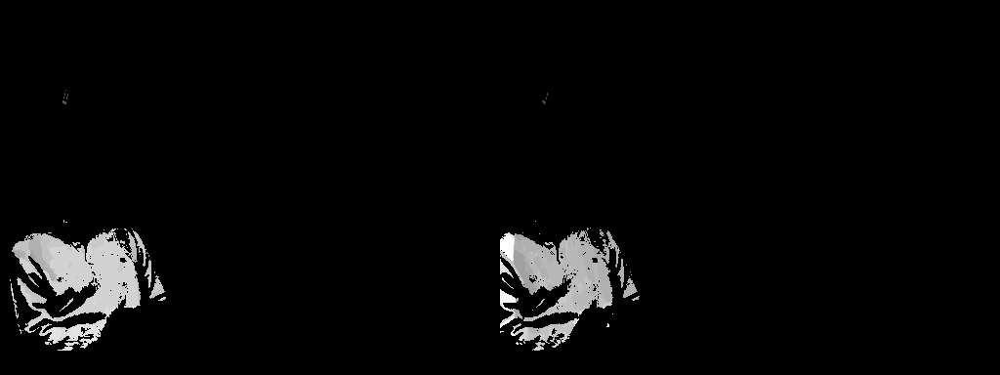

Probabilistic multiview depth image enhancement.

Multiview color and corresponding multiview depth classification results
We propose a general model-based framework for multiview depth image enhancement. Depth imagery plays a pivotal role in emerging free-viewpoint television. This technology requires high quality virtual view synthesis to enable viewers to move freely in a dynamic real world scene. Depth imagery of different viewpoints is used to synthesize an arbitrary number of novel views. Usually, the depth imagery is estimated individually by stereo-matching algorithms and, hence, shows lack of inter-view consistency. This inconsistency affects the quality of view synthesis negatively. This work enhances the inter-view consistency of multiview depth imagery by using a variational Bayesian inference framework. First, our approach classifies the color information in the multiview color imagery. Second, using the resulting color clusters, we classify the corresponding depth values in the multiview depth imagery. Each clustered depth image is subject to further subclustering. Finally, the resulting mean of the sub-clusters is used to enhance the depth imagery at multiple viewpoints. Experiments show that our approach improves the quality of virtual views.
Publications
- Pravin Kumar Rana, Jalil Taghia, Zhanyu Ma, and Markus Flierl:
Probabilistic Multiview Depth Image Enhancement Using Variational Inference,In IEEE Journal of Selected Topics in Signal Processing, Special Issue on Interactive Media Processing for Immersive Communication, April 2015.
- Zhanyu Ma, Pravin Kumar Rana, Jalil Taghia, Markus Flierl, and Arne Leijon:
Bayesian Estimation of Dirichlet Mixture Model with Variational Inference,In Pattern Recognition, Elsevier, Volume 47, Issue 9, September 2014.
- Pravin Kumar Rana, Jalil Taghia, and Markus Flierl:
Statistical Methods for Inter-view Depth Enhancement,In Proceedings of 3DTV-Conference: The True Vision - Capture, Transmission and Display of 3D Video (3DTV CON), Special Session on Free-Viewpoint Television and Related Technologies, Budapest, Hungary, July 2014.
- Pravin Kumar Rana, Zhanyu Ma, Jalil Taghia, and Markus Flierl:
Multiview Depth Map Enhancement by Variational Bayes Inference Estimation of Dirichlet Mixture Models,In Proceedings of IEEE International Conference on Acoustics, Speech, and Signal Processing (ICASSP), Vancouver, Canada, May 2013.
- Pravin Kumar Rana, Jalil Taghia, and Markus Flierl:
A Variational Bayesian Inference Framework for Multiview Depth Image Enhancement,In Proceedings of IEEE International Symposium on Multimedia (ISM), Irvine, California USA, December 2012.